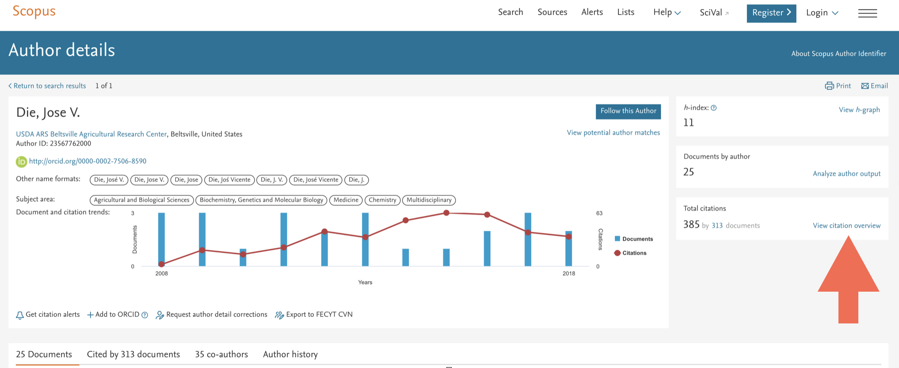
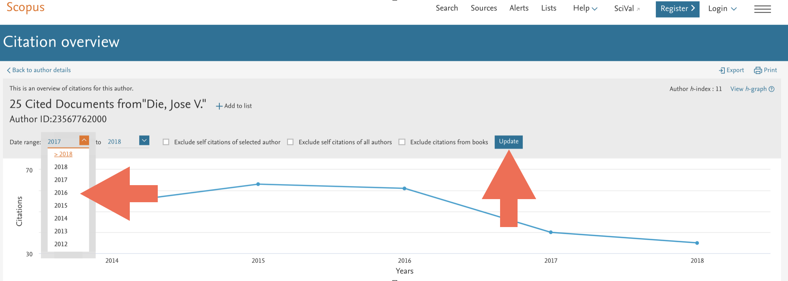
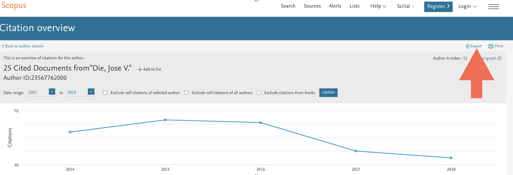
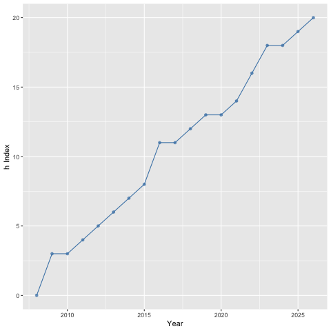
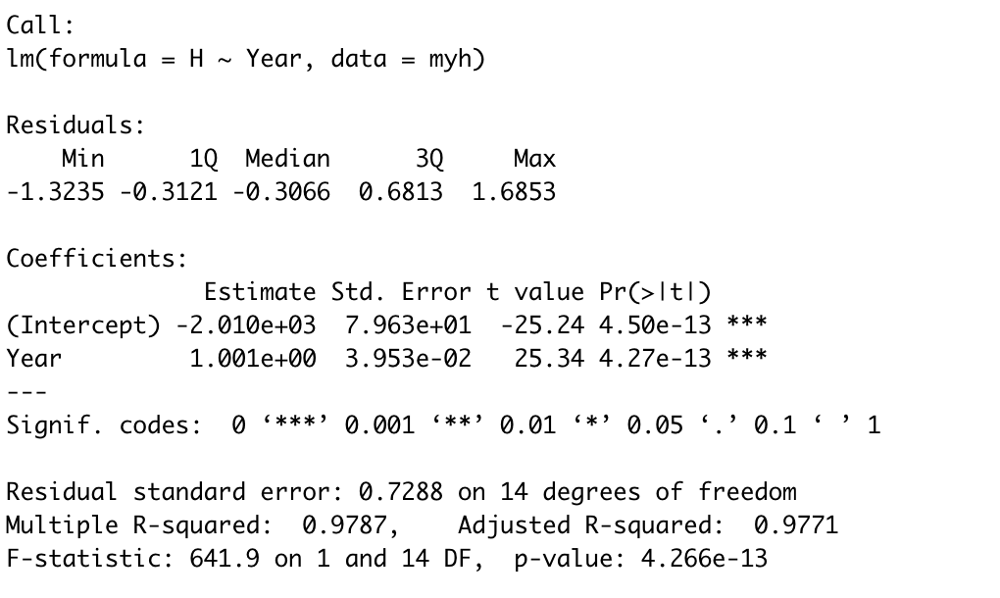
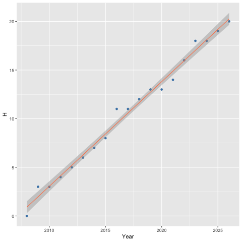

Compute and visualize h-index trajectories from Scopus exports.
hIndexOverYears provides a lightweight workflow for exploring bibliometric trajectories, citation dynamics, and h-index evolution over time using citation data exported from Scopus.
This R-package is motivated by the reading of How does a scientist’s h-index change over time?, by Jeff Ollertons, Professor of Biodiversity in the Department of Environmental and Geographical Sciences at the University of Northampton. It is a great post and I highly recommend it.
What you can do
- observe how your h-index has changed over your career time
- compare your h-index change with others scientists’change
- estimate how long it takes on average to get 1 citation for your most highly accessed papers (from publication date to present).
What’s new ?
-
V1.5 2022-07-26. Make a linear regression model.
-
V1.0 2018-09-02. Create plots using ggplot2.
- V0.1 2016-02-17. First release.
Corrections
Improvements and corrections to this document can be submitted on its GitHub in its repository.
Data set
Get the list of documents written by a given author and click on View citation overview.

Set Data range. Starting year corresponds to the beginnning publication record, so that author has h index = 0. Then, update the system.

Export the citation overview to a spreedsheet

Installation
Step1. You need to install the devtools package.
install.packages("devtools")Step2. Load the devtools package.
Step3. Install the hIndexOverYears package.
install_github("jdieramon/hIndex")Overview
The package focuses on three main tasks:
- cleaning citation data exported from Scopus
- computing h-index trajectories over time
- modeling and visualizing citation dynamics
The workflow is intentionally simple and reproducible.
Workflow
Before we start the analysis, we want to make the data tidy. The good thing is that Scopus keeps the same format for every citation overview, so data cleaning can be performed in one easy step. The function clean will read and clean the data for you.
Data preparation
dat <- clean_scopus("inst/extdata/CitationOverview.csv")Now, the dataset is ready for further analysis.
Plot the h Index
You can also use the h.plot function on the tidy data to show the h Index evolution over years. If the starting year does not correspond with h=0, you can enter the h value as an argument:
plot_h(dat, 2007, 2026, 0)
You may also want to use the citation_speed function to list your most highly cited papers (top10) and get a sense of how long it takes to get them 1 citation. The function shows by default your top10 cited papers, but you can give the number of papers as an argument. It shows the average time (in months) per 1 cite.
citation_speed(dat)## Year Journal avgMonth
## 1 2010 Planta 0.98
## 2 2011 Journal of Agricultural and Food Chemistry 2.10
## 3 2014 Environmental and Experimental Botany 2.53
## 4 2008 Analytical Biochemistry 2.67
## 5 2013 PLoS ONE 3.53
## 6 2007 Physiological and Molecular Plant Pathology 3.88
## 7 2013 Journal of Agricultural and Food Chemistry 4.00
## 8 2017 PLoS ONE 4.00
## 9 2012 Molecular Breeding 4.24
## 10 2011 Analytical Biochemistry 4.42Related to that, the function predict_citations will show the number of citations that are expected in a given interval of time (for example, 6 months) :
predict_citations(dat, term = 6)## Year Journal avgMonth exp_cit
##1 2010 Planta 1.02 5
##2 2018 BMC Genomics 1.66 3
##3 2011 Journal of Agricultural and Food Chemistry 1.97 3
##4 2019 BMC Plant Biology 3.00 2
##5 2019 BMC Plant Biology 3.00 2
##6 2014 Environmental and Experimental Botany 3.10 1
##7 2012 Journal of Experimental Botany 3.24 1
##8 2013 PLoS ONE 3.27 1
##9 2008 Analytical Biochemistry 3.82 1
##10 2018 Scientific Reports 4.36 1A new functionality included in v1.5 is the linear regression model. The function fit_h_model does the job using the same arguments as before:
fit_h_model(dat,start_year = 2007, end_year = 2026, h = 0)
Finally, the linear regression model can be plotted using the function plot_h_model that takes the same arguments.
plot_h_model(dat,start_year = 2007, end_year = 2026, h = 0)
Main Functions
| Function | Description |
|---|---|
clean_scopus() |
Read and clean Scopus exports |
h_index() |
Compute h-index trajectory |
plot_h() |
Plot h-index evolution |
fit_h_model() |
Fit linear regression model |
plot_h_model() |
Plot regression model |
citation_speed() |
Estimate citation velocity |
predict_citations() |
Forecast expected citations |
Philosophy
The package focuses on simplicity and reproducibility.
Instead of implementing large bibliometric frameworks, hIndexOverYears provides a compact toolkit for rapidly exploring academic citation trajectories using tidy workflows.
Author
Jose V. Die
Session information
## R version 3.5.0 (2018-04-23)
## Platform: x86_64-apple-darwin15.6.0 (64-bit)
## Running under: macOS High Sierra 10.13.3
##
## Matrix products: default
## BLAS: /Library/Frameworks/R.framework/Versions/3.5/Resources/lib/libRblas.0.dylib
## LAPACK: /Library/Frameworks/R.framework/Versions/3.5/Resources/lib/libRlapack.dylib
##
## locale:
## [1] en_US.UTF-8/en_US.UTF-8/en_US.UTF-8/C/en_US.UTF-8/en_US.UTF-8
##
## attached base packages:
## [1] stats graphics grDevices utils datasets methods base
##
## other attached packages:
## [1] bindrcpp_0.2.2 hIndexOverYears_1.0
##
## loaded via a namespace (and not attached):
## [1] Rcpp_0.12.18 knitr_1.20 bindr_0.1.1
## [4] magrittr_1.5 munsell_0.5.0 tidyselect_0.2.4
## [7] colorspace_1.3-2 R6_2.2.2 rlang_0.2.2
## [10] plyr_1.8.4 stringr_1.3.1 dplyr_0.7.6
## [13] tools_3.5.0 grid_3.5.0 gtable_0.2.0
## [16] htmltools_0.3.6 lazyeval_0.2.1 yaml_2.2.0
## [19] rprojroot_1.3-2 digest_0.6.15 assertthat_0.2.0
## [22] tibble_1.4.2 crayon_1.3.4 RColorBrewer_1.1-2
## [25] purrr_0.2.5 ggplot2_3.0.0 glue_1.3.0
## [28] evaluate_0.11 rmarkdown_1.10 stringi_1.2.4
## [31] compiler_3.5.0 pillar_1.3.0 scales_1.0.0
## [34] backports_1.1.2 pkgconfig_2.0.2